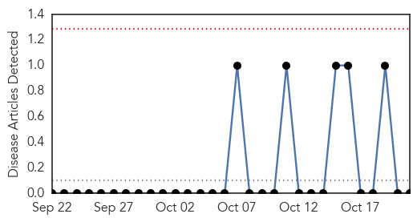
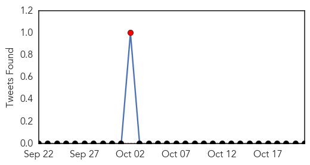
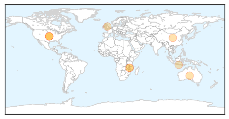

Yellow Fever
30-Day Web Trend
0 alerts, 0 warnings

30-Day Twitter Trend
1 alerts, 0 warnings

Article Locations

Article Confidences

Top Articles:
-
No articles found for Oct 21, 2014
Top Tweets:
-
No tweets found for Oct 21, 2014
Measles
30-Day Web Trend
0 alerts, 0 warnings
30-Day Twitter Trend
0 alerts, 0 warnings

Article Locations
Article Confidences

Top Articles:
- 0.968
- Scoop InfoPages
- 0.945
- 21st measles case of year found in Nantou
- 0.861
- Flexibility in disease outbreak management could save lives and money
- 0.860
- In disease outbreak management, flexibility can save lives and money
- 0.839
- Measles outbreak on Jetstar flight
- 0.837
- Flexibility in disease outbreak management could save lives and money
- 0.835
- Disease outbreak management -- flexibility can save lives and money
- 0.813
- Measles cluster at a university in the United Kingdom
- 0.811
- Flexibility in disease outbreak management could save lives and money
Top Tweets:
-
No tweets found for Oct 21, 2014